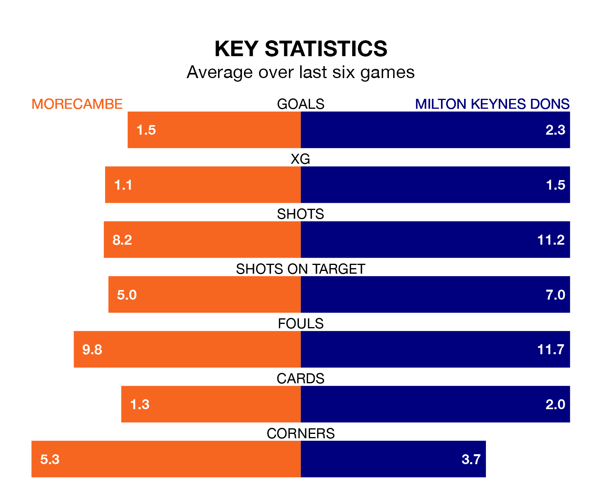

Milton Keynes Dons face Morecambe on Saturday seeking to protect their long unbeaten run in EFL League Two.
The Dons are unbeaten in six, with four wins and two draws, ahead of the 3pm kick-off.
They face a Morecambe team who have won just one and drawn one over the same number of games.
With 33 goals in 20 games so far this season, Milton Keynes are scoring more than average in the league with 1.6 goals per game. And they are conceding fewer than average, letting in 27 goals at a rate of 1.4 per game.
Morecambe are also above average scorers, with 1.6 goals per game, compared to a league average of 1.5. They have conceded 1.4 goals per game.
In Michael Mellon, the Shrimps have one of the league's most on-form strikers so far this season. He has notched 13 goals in 19 appearances, to sit fourth in the scoring charts.
His goal rate of one every 126 minutes is quicker than that of Max Dean, Dons's top scorer with a goal every 142 minutes, and a total of six goals in 14 games.
The home team are eighth in the table after 20 games, of which they have won nine and drawn four, earning 31 points.
The Dons are three places behind Morecambe in 11th, with eight wins and six draws putting them on 30 points.
In the last three years, Morecambe and Milton Keynes have played each other on five occasions. Milton Keynes won all of them.
Their last meeting was on March 25, when Milton Keynes won 1-0 at home.
Morecambe's last match was on December 16, a 5-0 win against Doncaster Rovers, with Mellon (two), David Tutonda, Eli King and Jacob Bedeau getting the goals for the Shrimps.
Milton Keynes beat Forest Green Rovers 2-0 last time out, also on December 16, with Dean and Jack Payne on the scoresheet.
